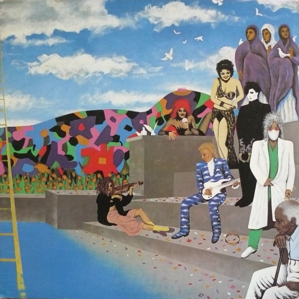

Purple Rain is the sixth studio album by American recording artist Prince,
the first to feature his band The Revolution, and is the soundtrack to the 1984 film of the same name. It was released on June 25, 1984 by Warner Bros.
Records. To date, it has sold over 25 million copies worldwide, making it the third-best-selling soundtrack album of all time.
Purple Rain is regularly ranked among the best albums in music history, and is widely regarded as Prince's magnum opus.
Time magazine ranked it the 15th greatest album of all time in 1993, and it placed 18th on VH1's Greatest Rock and Roll Albums of All Time countdown.
Rolling Stone ranked it the second-best album of the 1980s and 76th on their list of the "500 Greatest Albums of All Time".
Listen to Purple Rain from the album above:
Rate: The Hunt for Red October
vote data
Batman is the eleventh studio album by
American recording artist Prince and the soundtrack album to the 1989 film Batman.
It was released on June 20, 1989 by Warner Bros. Records.
As a Warner Bros. stablemate, Prince's involvement in the soundtrack was designed to leverage the media company's
contract-bound talent as well as fulfill the artist's need for a commercial (if not critical) revival.
The result was yet another multi-platinum successful cross-media enterprise by Warner Bros., in the vein of Purple Rain.
The album was No. 1 on the Billboard albums chart for six consecutive weeks.
It has sold over eleven million copies worldwide.
In 2016, film critic Matt Zoller Seitz praised Prince's songs and music videos for Batman,
more so than the film itself, stating that his songs "suggest a goofy, perverse, sensuous, somewhat introverted Batman
film that so far we've never gotten from anyone", and arguing that Prince's music videos
"are more psychologically perceptive than any of the Batman films."[11][12][13]
Purple Rain is the sixth studio album by American recording artist Prince,
the first to feature his band The Revolution, and is the soundtrack to the 1984 film of the same name. It was released on June 25, 1984 by Warner Bros.
Records. To date, it has sold over 25 million copies worldwide, making it the third-best-selling soundtrack album of all time.
Purple Rain is regularly ranked among the best albums in music history, and is widely regarded as Prince's magnum opus.
Time magazine ranked it the 15th greatest album of all time in 1993, and it placed 18th on VH1's Greatest Rock and Roll Albums of All Time countdown.
Rolling Stone ranked it the second-best album of the 1980s and 76th on their list of the "500 Greatest Albums of All Time".
Purple Rain is the sixth studio album by American recording artist Prince,
the first to feature his band The Revolution, and is the soundtrack to the 1984 film of the same name. It was released on June 25, 1984 by Warner Bros.
Records. To date, it has sold over 25 million copies worldwide, making it the third-best-selling soundtrack album of all time.
Purple Rain is regularly ranked among the best albums in music history, and is widely regarded as Prince's magnum opus.
Time magazine ranked it the 15th greatest album of all time in 1993, and it placed 18th on VH1's Greatest Rock and Roll Albums of All Time countdown.

Purple Rain is the sixth studio album by American recording artist Prince,
the first to feature his band The Revolution, and is the soundtrack to the 1984 film of the same name. It was released on June 25, 1984 by Warner Bros.
Records. To date, it has sold over 25 million copies worldwide, making it the third-best-selling soundtrack album of all time.
Purple Rain is regularly ranked among the best albums in music history, and is widely regarded as Prince's magnum opus.